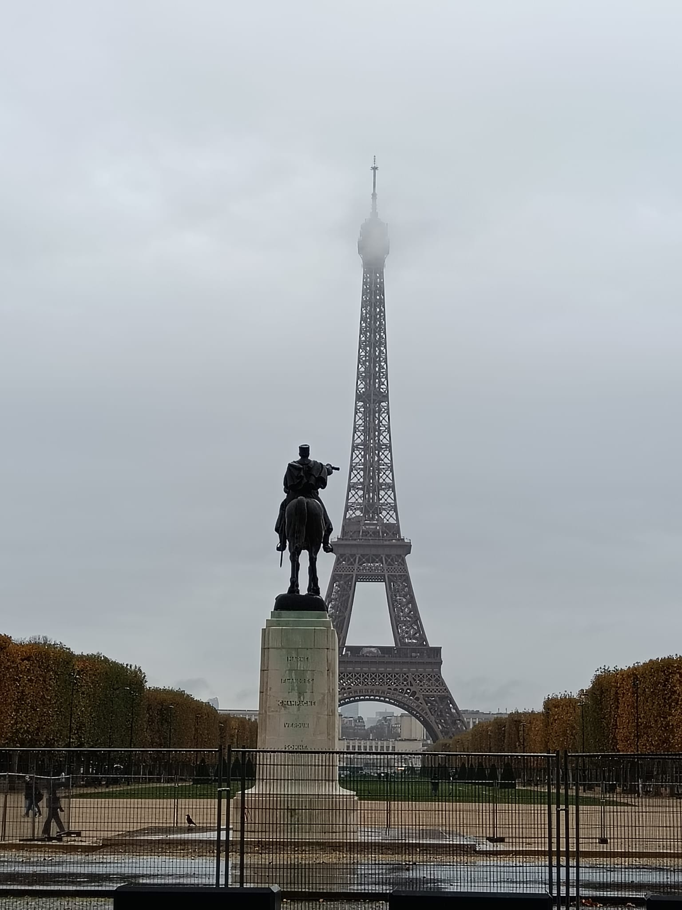

Stage 1
Mars Field
The Champs de Mars is the large green space at the foot of the Eiffel Tower, extending to the Military School. Originally, in the 18th century, it was a military training ground used for exercises and parades by French soldiers. Over time, it has become a public and symbolic space, the setting for festivals, national celebrations, and historical protests. Today, it is one of the most famous parks in Paris, perfect for picnics, photos, and for enjoying the view of the Eiffel Tower, especially at sunset.
